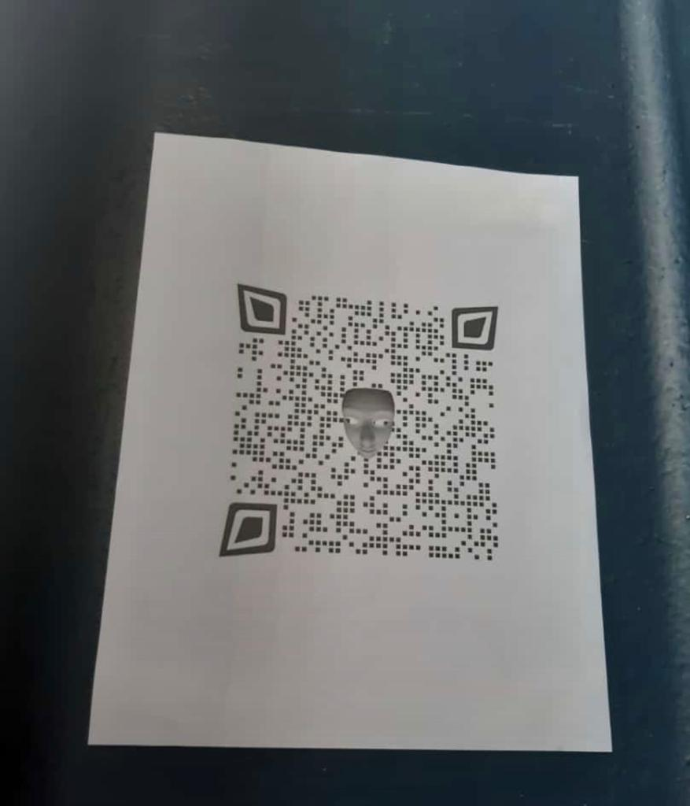

Todo empieza el dia que Carlos manda un correo por la mañana diciendo que los instructores habian llegado a su oficina
temblorosos y asustados, ya que ellos le pedian a Carlos que suspendiera labos esa semana, el al notarlos asi decidio
acceder a dicha petición sin entender un porque habian pedido eso.
Por lo tanto el dia lunes al finalizar la clase de Programacion Web, todo parecia un dia normal, todos estabamos
realizando una actividad en grupos de 4, todos concentrados en dicha actividad ya al punto de finalizar la clase tipo
[5:10 de la tarde] alguien dijo que nos tenian preparado algo, nadie sabia que era...
En este momento comienza una grabación extraña, todos nos veiamos sorprendidos nadie entendia que era o que estaba pasando, era un video que alguien nos habia mandado a los estudiantes nadie sabia sobre el, el video era negro, pixeleado y con voz modificada, al fin del video nos mostraron un audio de un personaje que se llamaba Kurt Rot, que pedia nuestra ayuda para poder detener a Ale Rav, como primer punto el nos manda un codigo que debiamos descifrar.
Martes
MARTES [8/10/19]:
El dia martes luego de descifrar el codigo Kurt Rot nos mando al polideportivo de la Uca a ver si encontrabamos una pista, de su amiga Ada que habia desaparecido, ya que Ale Rav habia creado un codigo para detonar unas bombas, el cual debiamos buscar a Ada o buscar algo relacionado con ella para asi frenar lo mas antes posible a Ale Rav, al dar un recorrido a toda la cancha de futbol, revisar los baños , ir a la cafeteria del polideportivo,
no encontrabamos nada, hasta que a uno de mis compañeros se le ocurrio buscar debajo de la mesa de ajedrez del polideportivo, he alli donde encontramos la siguiente pista.
Al momento de encontrar el codigo respectivo vimos que estaba mucho mas dificil que el primero,
ya que ella pensaba que haciamos minis programitas para dicha materia, y ella queria que nos exigiera mas para asi poder completar el misterio. Cada vez nos ibamos acercando a la identidad de Ale Rav...
Miercoles
MIERCOLES: [9/10/19]
Al resolver el acertijo que nos habia dejado Ada, Kurt Rot nos mando otro mensaje que le habia llamado la atención el mural del Atrio de la aulas D, ya que era muy diferente o es mas decir que era lo contrario a Ale Rav, ya que el mural tenia muchos colores que estaba lleno de felicidad y de vida, lo cual se le hizo muy curioso ir a ver entre las 2:00 y 3:30 de la tarde del dia miercoles y asi buscar a Renacho Melgar, y asi poder decirle a el o a alguno de sus ayudantes la palabra clave (KURT) para que ellos nos revelaran el siguiente codigo.
Por lo cual todos nosotros fuimos a observar a ese lugar y ver si alguien nos habia dejado un nuevo acertijo que resolver,
efectivamente en una pared al fondo, se encontraba el codigo siguiente para descifrarlo. cada vez teniamos que trabajar mas para ayudar a Kurt ya que los retos se iban poniendo cada vez mas dificil, y asi lograr ir un paso mas adelante para poder desenmascarar a Ale Rav y asi detener su malvado plan.

Jueves
JUEVES: [10/10/19]
Al finalizar este dia ya con otro acertijo por resolver, nos muestran otro video y un audio, lo cual claramente en el audio Kurt Rot nos dice que salgamos a las terrazas entre las A y las B, por lo cual todos salimos y esperamos a ver cual era la
siguiente pista o acertijo a resolver, luego de unos 2 minutos de espera escuchamos un ruido en el cielo, al ver todos para arriba era un dron que se acercaba poco a poco hacia nosotros, y al caer en las manos de alguien, claramente tenia otro acertijo que debiamos resolver.
Todos nos reunimos en el lugar claramente todos se alborotaron al recibir el codigo del dron, pues claro todos querian ayudar a Kurt lo mas rapido posible para evitar que le pasara algo a el, todos estaban encima de todos tratando de poder escanear el codigo y asi poder ver que nuevo reto nos tenian para ese dia, finalmente pudimos verlo y nos hizo una cita para reunirnos el dia siguiente en cierto lugar, que aun no puedo revelar, pero ya estabamos casi al final de la recta, todos ya sospechábamos de quien podria ser Ale Rav..
Viernes
VIERNES [11/10/19]:
Ya era ultimo dia, finalmente la identidad de Ale Rav se iba a dar a conocer, nos reunieron a todos en la magna V a las 5:00 de la tarde para que Kurt Rot nos mostrara el video que tenia el obviamente todos estabamos ansiosos de saber quien era pues fue una semana dura para poder realizar todos los retos que nos dejaban, todos queriamos saber quien era el que queria destruir la Universidad al paso de los minutos se dio a conocer la verdadera identidad de Ale Rav....
Y si pues al cabo de ese tiempo nos dimos cuenta quien realmente era, al saber su identidad todos estabamos en shock nos mantuvimos en silencio unos segundos pues nadie podia creer que Varela nuestro ex catedratico era Ale Rav, pero al fin y al cabo estabamos felices de haber detenido a el y que logramos resolver el misterio en esta semana.


.jpeg)